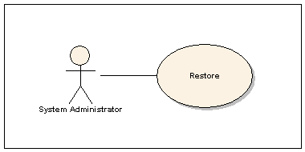

Note: The most up-to-date copy of this file is available in the SysBackup Documentation and FAQ pages on the AzerTech.net web site.
|
Docs & FAQ Pages Download SysBackup SysBackup on SourceForge SysBackup on GitHub SysBackup on Ohloh Installation Overview System Requirements Basic Installation SSH Remote Storage First Run Be Prepared! Special Considerations: Accounting data A common example Each business has many different types of data that need to be managed in special ways. Programmers, for example, will use a version control system to keep track of their source code. Programmers use source code repositories on their own as part of their business process. The system administrator who manages the repository data need only be able to restore it in the event of a disaster and the programmers will be able to continue their work. Unfortunately there are many special cases in business where the system administrator must do much more to protect the information on the company servers and workstations. It's not always easy to identify these cases or the work that must be done to manage them. Let's take a look at an example of one such special case: The accouting department of a typical business. There are many different kinds of information that are commonly recorded in accounting systems. Managers often find that they need to look at previous years data (sometimes even going back to companies that were long ago closed,) to retrieve a reference number for a contract or a telephone number for a former employee. Most governments require accounting data to be available for some years. It happens from time to time that government agencies will request information from previous years and the company must dig up that information and respond to the request. Yet accounting data is worthless if you can't also run the corresponding software to read the data and produce the required reports. Therefore, to honor your mandate as system administrator you must include a few special steps in your backup procedure just for the accounting department:
The above might not make any sense if you expect your accountanting group to ask for help only one or two years down the road. It starts to make lots of sense when you realize that they might be forced to ask for help five or ten years down the road. We all hope and pray that, by then, you will have moved on to bigger and better things. You will probably not be available to help the accounting staff with their needs when they call for help (and, without question, they will.) Your successor will need to find proper documentation to be able to provide the requested help and, even if he finds all the documentation, he might have a few questions for you. By then, though, you will almost certainly have forgotten all the details of the work you did. Therefore you too will be forced to rely on the documentation you produce along with your backups. Think about it: Making backups is easy but what will they be worth
on the day you are called for help? To succeed you will need to:
Note that the accounting department will be making their own effort, separate from yours, to ensure that they are prepared for their own future needs. They might, for example, purchase updated software each year and convert their previous years data to be compatible with their new software. They might also produce hard-copy printouts of all their reports and store them for future reference. Unfortunately this does not necessarily reduce the responsibility that you face as a system administrator. There is always a possibility of bugs or incompatibilities between current data and future software. It is always possible that hard copies of reports might be lost or might prove incomplete for some future purpose. Nobody really knows what might happen over a period of five or ten years. As such a future member of the accounting team might be forced to contact a future member of your system administration team for help with some unexpected problem. You need to be prepared. |

The goal of any serious backup process is to be prepared. An experienced system administrator wants to make sure that any piece of equipment (server or workstation) is setup so that users will be able to get what they need, when they need it, for different types of restore operations. This often means being able to go back in time and:
We are trying to prepare ourselves for the issues we will face as system administrators. Therefore it is critically important that we take the time and make the effort to follow an appropriate business process.
The solution is time-consuming to execute but, fortunately, it's simple and easy to understand:
It's a simple cycle; all you need to do is go through it from time to time. Here are some steps that you can take to get started:
This sounds simple enough - and it should be in many cases - but it can get complicated. It can get really complicated in cases where you are working with legacy systems that have been running for many years.
In difficult cases you can get some help by polling your user community and carefully reviewing your logs from time to time. In fact this may be the only way that you can be sure that your backups and test procedures actually cover all the functionality that your users are using.
Remember to go back to your restore plan and update it if, during the design and documentation of your test plans, you discover a problem with the restore or the backup procedures.
At this point the documentation you have produced is effectively your Disaster Recovery Plan. It's very nice that you have a plan - but you need to know if it's going to work and, if it's not going to work, you need to fix it.
Evaluate your results and, if anything is not entirely perfect, update your restore and backup procedures (and your test plans whenever necessary.)
It is important to keep repeating the above process until you are certain that you have successfully completed a backup-restore-test cycle without incident. This is the only way to be sure that your Disaster Recovery Plan is valid.
Keep in mind this one unfortunate truth: Once everything is working perfectly you will get at least one good backup. After that the user community will start finding new ways to use the services so that, over time, the value of the backups you are generating will go down. At some point things will have changed so much that the backups might start to appear to be a bit useless. To correct this situation as much as possible it is necessary to execute the above procedure every few months or whenever major changes are made to the server.
Of course disaster planning and recovery has different meanings in different contexts. As a system administrator you should add your hardware maintenance schedule to your plan. You might possibly want to take other issues into consideration - and there are a surprising number of them. How are your software licenses holding-up? Can you still run the software you licensed in previous years? What's going to happen if you upgrade your current software or hardware? Are your virtual machines still running this year? It's not always obvious but software upgrades, including installations of security patches, have been known to break existing resources. How does your Disaster Recovery Plan deal with these issues? Most of us, not surprisingly, are not as prepared as we need to be in regards to these matters.
Often our Disaster Recovery exercises result in the discovery of all kinds of unexpected surprises. This is another good reason for scheduling and running a disaster recovery at least once a year.
Having a more complete set of documentation, covering more of the issues that you face as a system administrator, allows you to ensure a higher degree of long-term excellence in everything you do.
Most day-to-day file recovery issues can be managed by keeping a fine-grained set of user and daemon backups in a lengthy rotation.
If the backups are granular enough you will be able to pull the information that your user community requests from time to time without too much trouble.
To save disk space many system administrators try to use incrementatl backups. In practice the incremental technique might save some disk space but it adds cost and complexity to many types of restore operations.
SysBackup tries to avoid these issues through the use of hardlinks between identical files. Hardlinks can save a great deal of disk space in cases where the contents of a folder are rarely modified. The savings can be especially great in cases where there are a large number of backupset rotations being stored over long periods of time.
On the other hand hardlinks are largely useless in cases where the backupsets are not granular.
Another problem with backupsets that contain lots of huge tarballs is that they tend to be expensive to work with. This is not only because it takes so long to find small files in larger tarballs - it's mostly because larger tarballs tend to contain files belonging to more than one concept, service, daemon or user. They can be difficult to distribute to users in response to help requests because they might violate some privacy or other restriction. When tarballs are not granular enough an administrator might fail to find the requested files or might even just outright refuse to look for them.
Granular backupsets do not have these problems. Not only is it easier to hardlink more tarballs between backupsets but the smaller tarballs tend to be much easier to distribute to users. This is because they tend to contain only files associated with a given user or service - so they often have few, if any, privacy or other restrictions associated with them. The person who owns the data within them can almost always just ask for a copy without causing any difficulty for the administrator who must approve the request. In these cases there is an added bonus: The administrator need not look for any files within the tarball. If the tarballs are granular enough it is often possible to simply give an entire tarball to a user and let the user look through it to find what he needs. This can save a huge amount of time while giving the user community a great deal of confidence in their I.T. infrastructure.